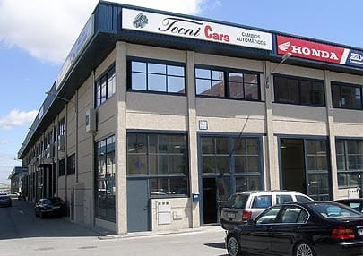

Tecnicars
Cambios
automáticos
Reparación y reconstrucción de cajas de cambio automáticas y convertidores de par. Es lo único que hacemos, y lo hacemos desde 1995 en el Polígono Marconi de Madrid.
Llámenos sin compromiso. Atendemos consultas por teléfono.

- DóndePolígono Industrial Marconi, Madrid
- Naves4 y 20, calle Laguna del Marquesado 10
- Garantía12 meses en todos los trabajos
- AlcanceRecogida y entrega en toda la península
Aquí solo se abren cambios automáticos
Dentro del sector nos diferenciamos por nuestro alto grado de responsabilidad y profesionalidad en el desarrollo de nuestro trabajo. Disponemos de un gran equipo de profesionales con una alta formación y especialización en su trabajo.
Utilizamos recambios originales de primeras marcas y contamos con los últimos avances en el campo. Cuando un taller general dice que la caja «hay que cambiarla entera», casi siempre quiere decir que no puede abrirla. Nosotros la abrimos: se repara y se reconstruye, y solo se sustituye lo que está gastado.

El almacén es el argumento
Se trabaja con ZF, GM, Aisin Warner, Hydra-Matic, Allison y Jacto, contando con amplio stock de todas ellas. Ese stock está en la planta superior, al lado del banco donde se reconstruye, y es la razón de que un trabajo no dependa de esperar a un pedido.
- ZF
- GM
- Aisin Warner
- Hydra-Matic
- Allison
- Jacto
Esta fotografía llevaba desde 2020 sin poder verse: estaba dentro de una animación Flash del sitio antiguo.
Ver las marcas y el stockLo que se hace en el taller
Cinco trabajos y una línea de teléfono. En el sitio anterior estos cinco servicios compartían una sola dirección web y se mostraban y ocultaban con un botón; ahora cada uno tiene su página.
Cajas de cambio automáticas
Reparación y reconstrucción de cajas de cambio automáticas de todas las marcas, con garantía de doce meses.
Convertidores de par
Reparación y reconstrucción de convertidores, sustituyendo los componentes de desgaste y fricción en vez de cambiar la pieza entera.
Desmontaje y montaje
Extracción y reposición de la caja de cambios en su vehículo, en nuestro propio taller y sobre nuestros cinco elevadores.
Mantenimiento
Sustitución del aceite y el filtro del cambio automático con cita previa, mientras usted espera en las instalaciones.
Recogida y entrega
Recogida y entrega a domicilio en toda la península, con flota propia, empresa de transporte y servicio de grúa.
El recorrido de una caja por la nave
El taller consta de dos plantas, y esa distribución es literalmente el proceso: el vehículo se queda abajo y la caja sube.
-
Planta baja
Se extrae la caja del vehículo
Planta baja de fácil acceso para los vehículos, con cinco elevadores, grúas elevadoras y herramientas de montaje y reparación. Aquí se realizan los trabajos de extracción y reposición de la caja de cambios automática en el vehículo.
-
Planta superior
Se repara y se reconstruye
Arriba se efectúan los trabajos de reparación y reconstrucción de los cambios automáticos, y también el mantenimiento de piezas, la limpieza y el engrasado. Al lado está el almacén con todo tipo de recambios.
-
Planta baja
Vuelve a montarse
La caja regresa al vehículo en la misma planta en la que se desmontó. Si el coche no puede venir por su propio pie, hay flota propia, empresa de transporte y servicio de grúa.
Un vistazo a la nave
Fotografías del propio taller. Siete de las que hay en esta web estaban encerradas en dos archivos Flash y no se veían desde 2020.


Preguntas que llegan por teléfono
¿Reparan la caja o la sustituyen por otra?
Se repara y se reconstruye. El taller está dedicado y especializado únicamente a la reparación y reconstrucción de cajas de cambio automáticas de vehículos, así como de convertidores de par o hidráulicos. La sustitución completa es lo que hace un taller que no puede abrir la caja; aquí se abre.
¿Qué garantía tienen los trabajos?
Todos los trabajos tienen una garantía de 12 meses, utilizando primeras marcas en todos los componentes sustituidos.
¿Con qué marcas de caja trabajan?
Algunas de las marcas con las que se trabaja son ZF, GM, Aisin Warner, Hydra-Matic, Allison y Jacto, contando con amplio stock de todas ellas. Si su caja es de otra marca, lo más rápido es preguntarlo por teléfono.
¿También reparan el convertidor de par?
Sí. Se sustituyen componentes de desgaste y fricción, como la rueda libre o los discos de impacto, en lugar de reemplazar el convertidor entero.
Estoy fuera de Madrid. ¿Puedo llevar el coche?
Hay recogida y entrega a domicilio en toda la península, con flota propia de vehículos, empresa de transporte y servicio de grúa. Las condiciones concretas de cada recogida se acuerdan por teléfono.
¿Cuánto cuesta y cuánto tarda?
Depende por completo de la caja y de la avería, y no hay tarifas publicadas: ni el precio ni el plazo se pueden dar por escrito sin ver el vehículo. Llame al 91 723 18 43 y cuéntenos el caso.